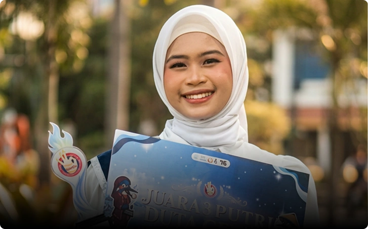
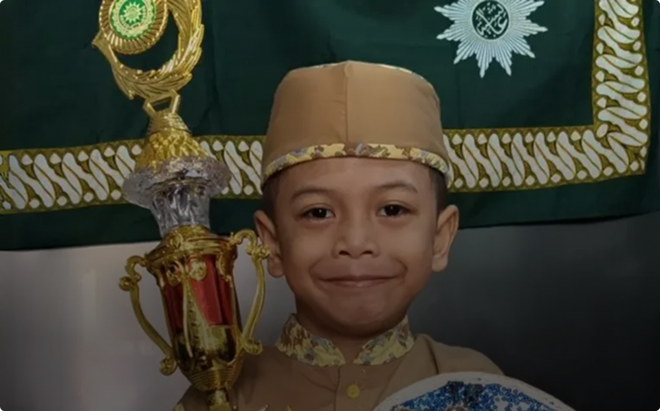
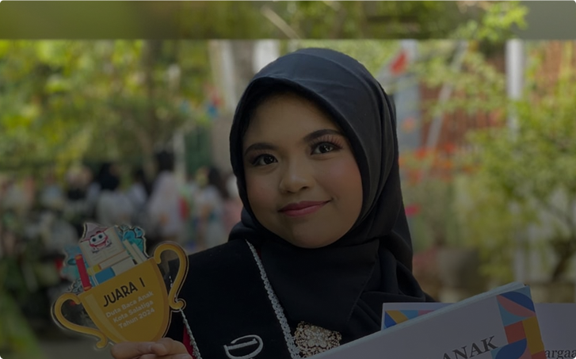
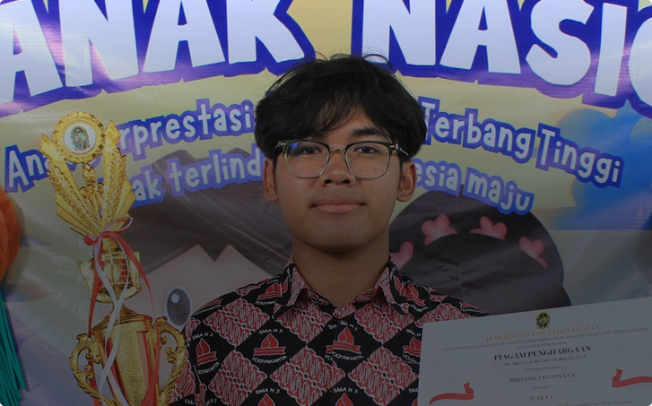
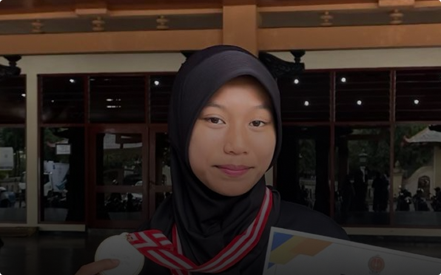
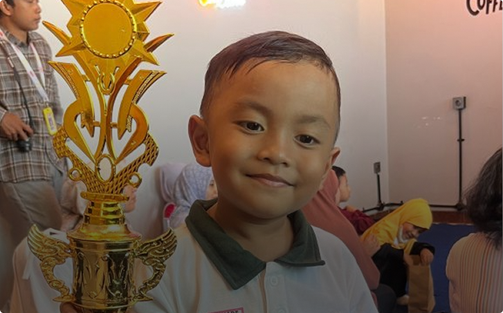
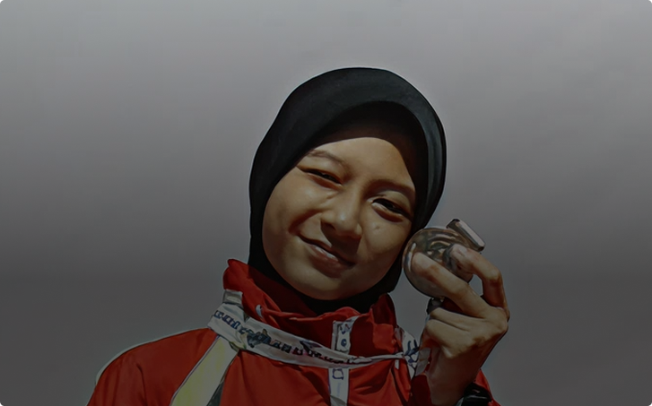
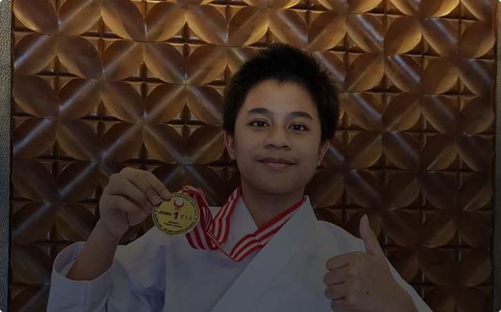
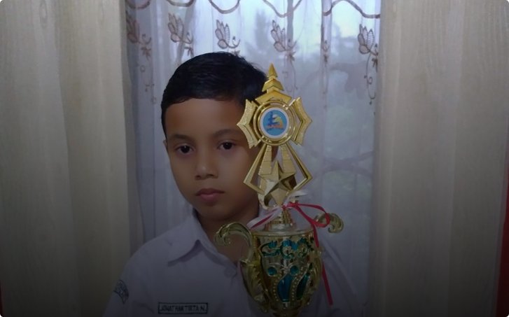

Penjelasan
Mengukir Prestasi,
Membangun Karakter
Setiap penghargaan mencerminkan dedikasi, sementara setiap kegiatan memperkuat kebersamaan. Bersama, keduanya membentuk pengalaman belajar yang utuh di Al Azhar Kelapa Gading.
Penghargaan Siswa
Mengapresiasi Setiap Langkah
Menuju Keunggulan
Setiap penghargaan menjadi motivasi untuk terus mencetak generasi yang unggul, berkarakter, dan siap bersaing di tingkat nasional maupun global.









